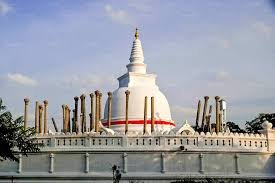
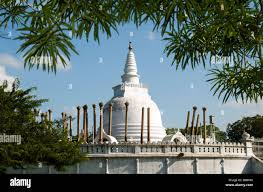
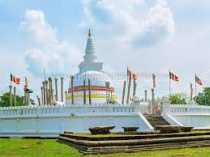

Thuparamaya
 
Thuparamaya is the earliest documented Buddhist temple in Sri Lanka. Its building dates to the arrival of Mahinda Thera (Mahindagamanaya) and the introduction of Buddhism to the island.
Located within the sacred precinct of Mahamewna park, the Thuparamaya Stupa is the earliest Dagoba to be constructed on the island, dating back to the reign of King Devanampiya Tissa (247-207 BC).
The temple has been recognised by the Government and listed as a protected archaeological site in Sri Lanka.
Thuparamaya is closely linked to Mahinda Thera, the envoy sent by King Ashoka to Sri Lanka, bringing Theravada Buddhism and Chaitya worship to the island.
At Mahinda's request, King Devanampiya Tissa built Thuparamaya to enshrine the right collar-bone of the Buddha,
thus the claim to be the first stupa built in Sri Lanka. It also marks the formal arrival of Buddhism.
The name Thuparamaya comes from "stupa" and "aramaya" which is a residential complex for monks.
According to the Palumekichchawa Inscription, the tank called Madamanaka (Palumekichchawa Wewa) at Upala Vibajaka area had been constructed
at a cost of 5000 Kahavanu and donated on behalf of the Bhikkus who were living at the Thuparama temple.
It further states that the harvest from the paddy fields surrounding the tank was presented to the Bhikkus at the temple.
The inscription is the earliest chiseled stone inscription in which the name of the Thuparama temple is inscribed and said to belong to the reign of King Gajabahu (114-136 A.D.).
 Location (Thuparamaya)